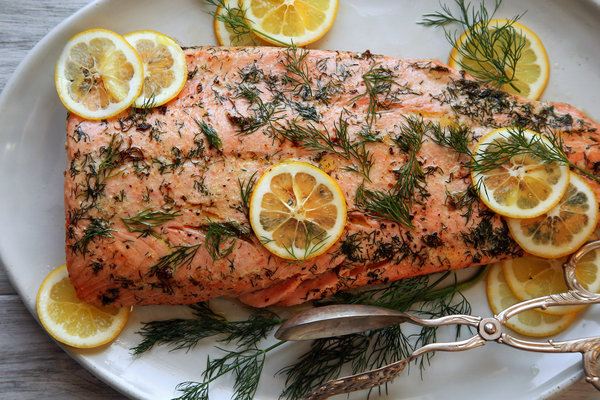

7.Salmon in the oven

Ingredients
1 fillet of salmon, skinned (tails are cheapest)
Any veggies you like: tomatoe, peppers, zucchinis, etc
Liquid cream
Black pepper
Salt
Method
- 1. Put the salmon in an oven dish -‐ add chopped veggies and cream on top-‐ with salt and pepper
- 2. Grill on a high heat for about 25 min. If it is a thick fillet, it will take longer to cook through, always check if the middle if cooked.
- 3. You can serve it with rice or pasta